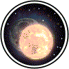

|

|
>> Содержание / Список кланов /
  Nights Nights
- Во что ты так чщательно всматриваешся?
- Ты Человек?! этого не может быть!!!
- Да, Я не Мертвяк, странник, я такой же живой как и ты...
- Но ты и на человека не очень похож.
- Может быть, но что тебя навело на мысль что я не человек?
- Глаза... Твои глаза, они не человеческие, но я же вижу что ты человек!!!
- Ах, Глаза... Ну что тебе сказать, я не такой "Человек" как другие, к которым
ты привык...
- Что это значит?
- Я Ночной житель этого мира.
- Я вижу при тебе оружие, Ты воин?
- Да.
- Ну, а ты добрый или злой?
- Смотря с какой стороны посмотреть. Для некоторых я могу стать исчадием Ада,
для других Ангелом поднебесья...
- Почему ты такой увереный в себе, неужто ты не боишся смерти?
- Смерть не следует за мной, она идёт впереди меня!!!
- Почему ты так смотришь на меня?
- Я чувствую твою кровь...
- Но ты же живой человек, а не вампир...
- Я ночной... Кровь это моё долголетие... Но я ею не питаюсь, так как вампиры...
она нужна мне лишь для востановления сил и продления жизни... Не дрожи так я не
собираюсь тебя убивать, покрайней мере пока не узнаю какой ты...
- Странно, но почему-то мне хочется поблагодарить тебя за это... Значит Для тебя
существует разница между светом и тьмой?
- Я ночной, Я живу ночью, а значит во тьме... Но не суди Меня по образу жизни...
Я не выбирал, я родился таким...
- Тоесть, ты хочешь сказать что есть ещё такие как ты?
- Да. Нас не очень много, но мы есть, кто-то рождается "Ночным", кто-то
становится по собственному желанию... Правда у первых к сожалению нет выбора...
- Ты хочешь сказать что любой желающий может стать, как ты говоришь "Ночным"?
- Теоретический да, практический это сложно...
- Обьясни...
- Просто так, невозможно стать "Ночным". Для этого нужен особый склад ума и
видения мира. Мы ходим под знаком тьмы, Смерть ласкает наши лица и говорит наши
имена тем, за кем приходит чтобы забрать в вечность, демоны Ада куют для нас
оружие и доспехи но это не значит что мы злые. Равновесие, вот что важно! Нельзя
нарушать баланса, ведь если дать мертвякам возможность, они сожрут всех и вся.
Мы следим за порядком ночью, во тьме...
- Ты говоришь как нейтральный...
- Может быть, между нами есть сходство.. Но! Но у них есть Выбор, которого мы
лишены. Мы следим только за созданиями самой Тьмы!
- Да, тяжело не иметь выбора. Но у меня он есть. Смогу ли я присоединится к
тебе?
- Чтож, у тебя есть выбор... Но сначала ты должен пройти испытание света...
- Я пройду его!
- Это твоё право, твой Выбор! Желаю тебе Удачи, Странник. Прощай!
Странник долго смотрел вслед уходящему "Ночному". Странный человек, о котором
никто никогда не слышал...
"Я исправлю эту ошибку" промелькнула мысль.
- Ангел, явись.
- Что тебе нужно, странник?
- Я хочу пройти испытание Света.
- Зачем?
- Я должен стать "Ночным"!
- Ты хочешь лишится выбора?
- Да, ради этого стоит лишится большего....
- Это твоё Право, твой Выбор!!! Я прослежу за тобой...
- Да это моё Право и мой Выбор, Клан "Nights" ждёт меня. Я Буду Ночным!!!
Официальный сайт клана: http://nights.ucoz.com
|
 |
|